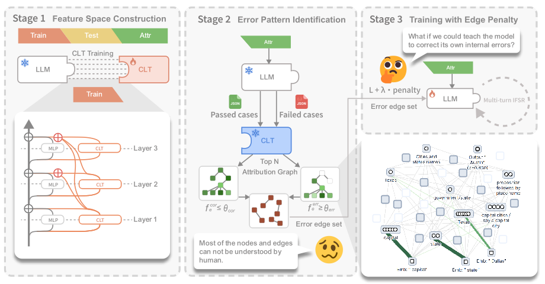
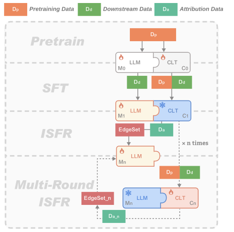

Beyond Analysis: Training Language Models with Internal Mechanistic Feedback
这篇论文最值得记住的是：可以先找出与错误预测相关的内部特征组合，再把避开这些组合写成训练目标。 作者提出 IFSR（Interpretable Feature-Space Regularization），用 cross-layer transcoder（CLT）和归因图筛选特征对，在 SFT 中加入共激活惩罚，推理时无需额外干预。
我的判断：它给出了“机制分析工具怎样参与模型训练”的具体做法，同任务收益值得复现；但目前更充分的证据是错误相关特征正则化有效，对于“修复了哪条因果机制”以及“提升了通用能力”，还缺少关键对照。
1. 背景信息
- 作者与机构：Hanlin Xue、Gang Zhang、Xiangyuan Wang 为共同一作，Junfei Liu 为通讯作者；来自北京大学软件与微电子学院、Rice University、东北农业大学、University of Bristol。
- 发表：EMNLP 2026 主会，2026 年 10 月，pp. 59164–59178。本文依据 ACL Anthology 正式版本及其 15 页 PDF，包括附录 A–G。
- 实现基础：Gemma-2-2B、社区训练的
clt-gemma-2-2b-426k、circuit-tracer。作者明确说明，这个 CLT 不是 Gemma Scope 的产物（§4.1）。截至阅读日，论文和官方条目未提供 IFSR 专用代码仓库，标题检索也未找到可确认的实现；公开基础工具不等于本文实验已可直接复现。
2. 关键问题：输出答错了，训练能否进一步指出该避开什么内部计算？
考虑金融情感分类。附录 F.2 发现一个第 3 层特征 F:3:5691，自动标签是 choices，会对 option、decision、risk、opportunity 等词响应。作者猜测：这些词在金融文本中可能只是中性术语，模型却可能把它们误当作情感线索。这是作者提出但尚未验证的解释，论文没有展示一条对应的完整“原句→误判→修正”记录。
贯穿案例（为便于理解构造）：输入“该公司披露了员工股票期权的数量”，应判为中性；假设模型因为“期权”相关表示与某个情感特征共同激活而误判为正面。普通交叉熵要求它输出中性，却不指定应改变哪个内部组合。单独压低“期权/选择”特征，又可能伤害其他需要这个概念的样本。
IFSR 的思路是先在多条样本中确认：某个特征对是否经常出现在错误预测的归因图中，却很少出现在正确预测中。满足这个统计条件，才把它列为需要惩罚的组合。“choices”这个语义标签本身不参与筛选；即使人读不懂特征，也可以执行整套流程。
3. 关键方法：归因负责选特征对，共激活负责提供梯度

来源：原文 Figure 1，PDF 第 3 页。重点看中间的正确/错误分组如何产生 error edge set，再看右侧它如何进入训练损失。下文以 §3 的文字和公式说明数据用途。
3.1 用冻结的 CLT 读取内部特征
CLT 把模型第 $\ell$ 层 residual stream $h_\ell$ 编码为稀疏特征，并通过跨层 decoder 重建后续层的 MLP 输出。它由重建与稀疏性目标预训练，提供比原始神经元更细的分析坐标。论文 Eq. 1 写作：
分类实验读取预测位置，通常是最后一个 token。回到上面的句子，原模型前向传播后，CLT 会在这个位置读到一组跨层特征；其中哪些与“期权”或情感相关，需要实证分析，不能由我们给的名字预先指定。
单轮 IFSR 中 CLT 参数冻结，语言模型参数更新。 冻结不意味着切断梯度：损失仍可经过 CLT encoder 对 $h_\ell$ 求导，再更新主模型。推理时使用更新后的主模型即可，不需要运行 CLT 或构建归因图（§3.1、§3.3）。
3.2 在独立归因集上，找“错时常见、对时少见”的边
每个任务取 500 个归因样本，按模型预测是否正确分组。单条样本的特征边由局部梯度归因得到：
它同时考虑源特征有多活跃、下游特征对它有多敏感。归因时冻结 attention patterns 与 layer normalization 的分母，得到当前工作点附近的线性近似（Eq. 3、Appendix A）。这使图可计算，也限定了它的因果解释范围。
作者先按特征对输出 logits 的总影响保留 top-500 节点，再按边的归因幅度剪枝。之后只统计边是否存在；跨样本用“源层/特征编号、目标层/特征编号”对齐，不保留 token 位置。
设一条边在错误图、正确图中的出现频率分别为 $q_e^{\mathrm{err}}$、$q_e^{\mathrm{cor}}$（这里改用 $q$，避免与特征激活 $f$ 混淆），则选择：
对选中的边，再用 $\log(1+q_e^{\mathrm{err}}/(q_e^{\mathrm{cor}}+10^{-6}))$ 赋权，并归一化到均值为 1，得到 $w_e$（Eq. 4–5、Table 7）。它衡量的是错误选择性，已经不同于上面的归因权重 $A_{s\to t}$。
在构造案例中，只有“期权相关特征→某下游特征”这对节点真的通过了跨样本筛选，它才进入 $E$；一次误判和一个听起来合理的语义故事都不够。
3.3 回到训练集，惩罚被选特征对的共同激活
训练目标是（Eq. 6–7）：
其中 $f_s,f_t$ 是当前训练样本在预测位置的两个特征激活。论文默认 $\lambda=0.5$；它决定输出监督与内部惩罚的相对强度。
继续上面的金融句子：若被选特征对同时强激活，乘积项就变大；主模型一边学习正确的中性标签，一边承受压低这一组合的梯度。输出是否因此修正，要由评估验证；损失函数本身不保证模型会找到我们设想的替代推理路径。
这个实现有一处很容易读错：训练直接优化的是 $|f_s f_t|$，并不直接压低 $A_{s\to t}$。 局部梯度归因用于筛选候选关系，错误频率决定惩罚权重，而训练信号是激活乘积。因此方法更准确的描述是“对归因筛选出的特征对做共激活正则化”。
按照论文的非负 ReLU 写法，乘积对源激活的导数与目标激活成正比；目标越活跃，源受到的压低压力越大。这解释了它为何具有“条件性”，也说明优化可能通过压低任一端来降低损失，未必改变两端之间的传递关系。
3.4 模型更新后，要重新校准观察它的 CLT

来源：原文 Figure 2，PDF 第 5 页。重点是训练主模型后，要适配 CLT 并重新找错误边，不能无限复用旧特征坐标。
单轮内冻结 CLT 是为了保持惩罚对象稳定。更新积累后，模型激活分布会偏移；多轮版本于是用通用文本与任务数据微调 CLT，再用新的 500 个归因样本筛边，继续训练主模型（§3.4、Appendix B）。作者也承认，CLT 更新后同一特征编号可能改变含义，不能直接把跨轮编号相同当作同一机制。
4. 数据与设置：结果来自单一小模型上的分类任务
全部实验基于 Gemma-2-2B，覆盖 NLI、情感、语法可接受性、阅读理解、新闻、情绪、金融情感、安全、代码缺陷和逻辑谬误检测。所有任务均报告 accuracy，包括 CoLA。各任务训练数据最多 20,000 条，较小任务使用更少样本（Appendix B）。
- 训练：8×H800，2 epochs，learning rate $2\times10^{-5}$，batch size 8。§4.2 称主结果取三个随机种子均值，但主表未给标准差。
- 数据职责：训练集用于更新模型；归因集虽然不直接做交叉熵训练，却通过标签参与筛边，是额外监督来源；评估集用于测效果。作者声明三者互斥。
- 成本：作者报告训练时间增加约 5–11%，额外显存估计为 10–30%；每任务另需约 15–30 分钟为 500 个样本构图。多轮 CLT 适配还有额外成本（Appendix D），所以“推理无额外开销”不等于“整套方法只多花几个百分点”。
复现时有两处需核实。其一，正文混用 test/validation，附录“留出 10%”的概括也不能直接还原 Table 6 的全部计数；500 个归因样本具体从哪一划分扣除，仍需数据索引确认 [?]。其二，Appendix C 称主实验统一默认 $\lambda=0.5$，但 Finance 主表的 83.51 在 Table 8 对应 $\lambda=0.6$，而 $0.5$ 对应 83.25；这是原文口径差异，不能替作者补出解释 [?]。
5. 关键结果：同任务收益较扎实，机制与迁移解释需更强对照
5.1 首先确认：内部惩罚是否改善同任务预测？
Table 1 的十任务平均 accuracy 从 SFT 的 77.08% 提高到 79.53%。下面保留最有判断价值的任务：
| 任务 | SFT | IFSR | 提升（百分点） | 说明 |
|---|---|---|---|---|
| BoolQ | 80.75 | 86.35 | +5.60 | 本文最大收益 |
| Finance | 78.22 | 83.51 | +5.29 | 主表值；λ 口径见上文 |
| MNLI | 85.90 | 90.63 | +4.73 | 较强 SFT 基线上仍有收益 |
| SST-2 | 95.00 | 96.50 | +1.50 | 接近高准确率区间，增量较小 |
| Emotion | 93.65 | 93.95 | +0.30 | 小收益，主表无误差条 |
| Logic | 14.74 | 15.09 | +0.35 | 13 分类，绝对能力仍弱 |
其余四项也有提升，因此“这组任务上方向一致”有表格支持；但不能把所有小增量都称为统计显著。尤其 Logic 表明，减少错误相关激活不一定能补上模型原本缺乏的任务能力。
5.2 收益是否只是多加了一个正则项？
Table 2 给出了有用对照：
| 方法 | 十任务平均 accuracy（%） |
|---|---|
| 标准 SFT | 77.08 |
| SFT + L2，weight decay 0.01 | 76.00 |
| SFT + 随机特征边惩罚 | 75.51 |
| SFT + 错误相关神经元惩罚 | 64.47 |
| IFSR | 79.53 |
随机边与 IFSR 匹配边数和 $\lambda$，结果更差，支持挑选哪一组特征对确实重要。神经元版本按错误/正确样本的平均激活幅度比选节点，再惩罚单个神经元；整体明显更差，但 CodeXGLUE 是例外，神经元版本 66.27 高于 IFSR 的 66.04。
我认为作者把这进一步解释为“证明稀疏特征空间必不可少”，还跨了一步：神经元对照同时改变了坐标系、单点/成对惩罚和激活尺度。相同 $\lambda$ 与数量不保证梯度强度相当。 缺少 CLT 单特征惩罚、保留节点度数的随机重连，以及经尺度校准的神经元对照，尚不能分清收益来自稀疏表示、成对约束，还是惩罚强度更合适。
5.3 跨任务提升能否归因于 IFSR？
Table 3 用某个任务训练出的 IFSR 模型评估其他任务。比如 SST-2 训练后，CodeXGLUE 达到 59.34%，高于 base 的 40.86%；Emotion 训练后，Finance 达到 62.76%，高于 base 的 28.99%。
关键缺口是没有相同源任务的 SFT 迁移矩阵。 这只能说明“整套任务训练后的模型有时比 base 更好”，无法分离普通任务微调与内部正则化的贡献。要验证 IFSR 的额外迁移收益，应比较同一源任务上 SFT 与 IFSR 在目标任务的表现。
负迁移也不可略去：AG News 训练后，SST-2 从 base 的 76.60 降到 49.15，CoLA 从 65.10 降到 31.93。另外，作者明确提醒 CoLA 多数类基线约为 69%，跨任务达到高 60 分并不能证明学到了语法能力（§4.4）。因此我不会用这张表给“通用能力提升”背书。
5.4 多轮改进是否意味着不断发现新的错误机制？
Table 5 中，MNLI 从 SFT 的 85.90，经四轮依次达到 89.21、91.47、92.74、92.35；CoLA 在第二轮达到峰值 85.36，之后轻微回落。多轮可以继续提高分数，但并非单调增长。
作者同时观察到可识别错误边减少，解释为主要错误逐步消除。不过，多轮也增加了训练量、归因样本和 CLT 适配，论文没有给相同训练预算的继续 SFT 对照。边数减少还可能受到 CLT 表示变化影响，不能单独证明原有错误机制被逐个消灭。
6. Insights：最值得补的三个实验
6.1 先分清收益来自“边”，还是来自少数 hub 特征
CoLA 中，一个第 0 层特征 F:0:7572 就是 65.9% 错误边的源头（§4.5、Table 4），但它的自动标签及激活样本很难对应明确语法含义。结合乘积惩罚，这提示一个替代解释：压低少数高度连接的源特征，就可能同时降低很多条边的惩罚。
我会比较原始 IFSR、只惩罚这些 hub、保留节点度数但随机重连三种设置，并校准 penalty 的实际梯度尺度。若前两者接近，方法价值主要在错误特征定位；若只有原边配对有效，才更支持交互结构本身不可替代。这比继续增加几个相似分类任务更能检验核心创新。
6.2 冻结 CLT 既提供稳定坐标，也给模型留下规避读出器的空间
论文已经注意到训练后 CLT 可能失配，并通过轮间适配处理。但“旧 CLT 上的共激活变小”仍可能对应多种情况：任务机制改变了、概念迁移到别的方向，或者原有计算换了一种表示。accuracy 提高不足以区分它们。
可检验的做法是：用独立重训的 CLT 或探针重新评估相同错误类型，再在主模型上做局部 activation patching，并检查对相关分布偏移样本的泛化。这样可以把“训练信号有用”与“我们确实修复了某种机制”分开验证。这也是将内部指标变成优化目标后，需要防范的一种指标规避；本文尚未证明它实际发生。
6.3 迁移到 VLA 时，首先要改的是错误标签与归因单位
本文依赖可明确判对错的分类结果，以及单个预测位置的特征。机器人 rollout 的最终失败可能混合视觉定位、动作选择、接触控制等原因；直接按整段成功/失败筛边，容易把物体、场景、阶段差异当成错误机制。
我更愿意先做一个受控实验：固定物体与任务阶段，只区分某个局部事件是否出错，例如接触前的目标定位是否正确；再在配对状态上筛选特征交互，与同数据 SFT、失败样本重加权和单特征惩罚比较。只有在这些对照之上仍有收益，才值得把内部惩罚扩展到整段动作。 这是从本文方法边界推出的研究设想，论文没有做 VLA 实验。
7. 连接与发现
- MOC-Interpretability — 从解释模型内部行为，走向把内部统计信号用于训练；需要区分优化收益与机制验证。
- Circuit-Tracing-Attribution-Graphs — IFSR 借用 CLT 和局部归因筛选特征对；理解 replacement model 的近似范围，有助于判断本文“mechanistic feedback”的证据强度。